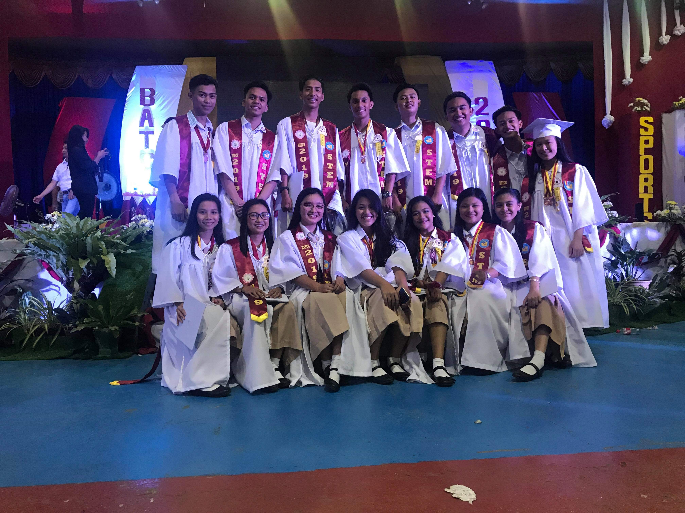

Childhood Years
Hi, my name is Ian R. Cervantes, i was born on January,26 2001 in the City of Ilagan in the Province of Isabela.1During my childhood years I use to play a lot with my friends outside We usually start playing at 4 in the afternoon until it's time to eat dinner.2I was usually a troubled kid Since I always went home with some bruises and a dirty clothes.3But i was the kind of kid that would have high hopes and dreams to fulfill4During those times I only care about having fun and being result of that I would always get scolded by my parents.5I would always have an average grades in school not so high and also not failing. 6During those years i would usually spend most of my time outside or whenever i'm home i would spend most of my time sleeping order watch some cartoons like Tom & Jerry.7I would say that i'm a spoiled child since i was the youngest in our family.8 I would always get what i want or eat whatever i want.9sometimes i would throw a tantrum if my parents doesnt give me the things i want, I would yell or lock myself in the room untill they would give me what i want.10
We would sometimes visit my mother's home province in Catanduanes.1We would go there every summer break to visit our relatives,2 we would travel through sea so i always get to ride in large a ferry boat.3Thats why i always get see sick since the travel is usually 7-8 hrs long. 4Once we arive in the island of catanduanes we were always greeted by the town folks with a warm smile.5Our relatives would always prepare a huge feast so i always get to eat their great foods,6Although i have to restrain myself because of my allergies in seafoods i usually just eat meats instead of their finest seafoods.7So it was always a bummer whenever i get to see my relatives enjoy some seafoods making me curious of how eat taste like.8 Before leaving and going back to Isabela my Uncle and Grandparents always gives me pocket money and some great foods like "pili-nuts" which I Love the most.9 Even though we only spend atleast a few months there I always leave a portion of my heart to the Island of Catanduanes because of how warm and lovely the scenery and the smile of the people living there.10It has been a fun childhood experience for me since, every day I get to meet new people and friends to play with and it something I would Always treasure and bring with me untill the very end.11
TEENAGE YEARS

During my teenage years, I seldomly go outside to play and hang out with my friends.1 After I have transferred to a new school since then I would prefer to be alone indoors and be in my own company rather than going outside2I would spend most of my time Playing video games or scrolling thru social media platforms like Facebook.3I would also go outside and hang out with some new friends But I would also be the first to go home since I got used spend time alone that it has also affected my social life.4 during my junior highschool days i was admitted at Isabela National HighSchool as under the curriculum of Special Program in the Arts wherein it has alot of major specialization where we will be admitted depending on our own talents.5I was admitted under the specialization of Visual Arts where in we specialize in drawing,paintings and even sculptures sometimes we where even task in making costumes and props for the other specializations mainly the Dancers.6Sometimes we even go outside our school to compete and even going to Regional Festivals like the yearly unticipated event the Regional Festival Of Talents or RFOT.7Wherein students from various regions compete with there talents, like dancing,mural paintings and even dramas.8During the 2014 RFOT I was surpirse that i got a call up from are head that i would be participating as one of the mural painters,during that time I was unexperience with competitions thus making a lot of "Rookie Mistakes" and end up being eliminated during the prelimenaries.9Even though I was sad i lost i was still happy that i was given a chance to participate and show my talents to everyone specially my parents who was there supporting me and even giving me a lot of ideas.10
After a memorable run as a junior high school i was ready to make another move thus transferring back to my old school at Saint.Ferdinand College to continue my studies as a Senior High School Student.1At first i was afraid transferring once again since it also means i need to adjust myself with my new classmates.2But i was glad when i saw the Class List for our Section, i saw a lot of familiar names some i have already been classmates with during primary school, others where my classmates during junior highschool.3During those two years as a Senior High School student i came face to face with some challenges both inside our school and outside.4It was during those time that i get to know myself better,and to know what i want to take up once i enter College.5Those two final years as a High School student was one of the best memories i have.6 Specially during those time i was able to come face to face with myself that soon i will be going to College the last step before i went out and face reality of life. 7And also thinking that once i enter College i have to move out of our house and province in order to attend one of the universities that i would be applying. 8After Graduating Senior High School i was having some mix emotions like enjoyment and fear.9I was thrilled that i finally finish and survive those years and that i was excited of what's next10I was Afraid and Sad due to the fact that i know what happens next, and that is me going to College and having to move away at the same time I was sad because me and my friends will be going to have a seperate paths to take,but during those time i know to myself that somehow i will be ready to face what's ahead of me.11 I got this far and there is no stoping me now but myself so I have to show to everyone even to myself I can and I will survive the next four years in College.12

COLLEGE YEARS
Now on my college years I moved from our province to Manila in order to attend school at the University Of the East.1 It was somewhat a big move for me as I don't know much about the place and I only knew a few people there but I met some great friends At the university and enjoyed my first semester.2 Unfortunately for my second semester I went back to our province After it was announced that manila will be under community lockdown due to the spread of the novel coronavirus thus making my second semester cut short before our final exam.3Now I am a Second year student, and having a new experience since we are currently enrolled and taking up our subjects online and at the comfort of our home.4This past semester, it had been really tough as we had our first online classes, at first a find it exciting since I get to stay in my comfort zone in our house.5But as time went by, those excitement turned to struggle as it was hard to learn when you only listen to the lecture and not being able to fully experience some activities, and because sometimes I have trouble with our connection I would miss some of our classes sometimes even quizzes.6But since I don't really like having negative thoughts I would like to think of some positive sides to this pandemic and online classes,7 one of those things is that I get to stay home and be with my family and also I don't need to worry about managing my allowance or cramming my time since in each activities given to us have a long duration before the deadline so I don't need to worry about missing any activities.8And recently I celebrated my 20th birthday and I get so celebrate it with those people that matters to me most.9 Although I don't know when I will be able to go back to manila and continue my studies and once again live alone in my apartment, I am looking forward to how things will turn out this semester and face the challenges of the so called "new normal", in online learning.10
Although I miss the experience of living in the big city and enjoying a full college life experience like going to school having to talk to my friends daily and being able to watch the competitions on UAAP and enjoying some of the school events like Powhiri.1I am still grateful that after all these challenges and adversity that the world is facing right now I am grateful that I still get to continue my studies and hopefully be able to finish it on time.2I am hoping that before I became a third year student and before the semester begins I am hoping that everything will go back to normal and that the pandemic will be over soon since there is already a vaccine, i just hope that I get to go back and truly experience life once more.3 But right now I am just enjoying what's going on right now and fully taking advantage on what I can do like spending more time with my family and getting to eat home made dishes that i rarely have during my time in manila, since i live alone i would usually just buy ready made dishes or fast foods.4 Our second semester this school year has only begun and I have already somewhat got used to this kind of setup of learning that although this is just the beginning of the semester and some of the activities are still light I am already preparing myself for the Prelims Exam and midterms by managing my time when playing games, watching movies and studying.5 So that when I go back to manila I won't be stressed out about having to deal with the deadlines, since right now I'm already trying to set my time and train myself not to cram and be able to handle pressure.6 Something that I was unable to do during my first year, because of the sudden big move of moving from our province to manila and having to live alone, I wasn't able to handle the pressure of having good grades and I was unable to fully focus on things that matter most during that time since before college I was so dependent on my parents.7But because of this big move I was able to become more independent than I was before I learned some new skills and experience like cooking basic dishes, cleaning my own room and having to go to a laundry shop.8As time went by I got used to living alone and can proudly claim for myself that I was able to survive living and not depending so much from my parents it made me realize on how strong I am and how I can be able to adopt from my surroundings.9 At this moment, although I am still on my second year I can already claim that my college experience is one for the books, this is the time I was fully aware of my own strength and weakness and how I can truly use those strengths and weaknesses as my advantage in living and those experienced and future experience will define me in the future once I graduate form college and have to start facing the real world.10